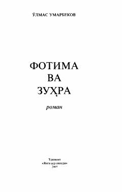

FVEzgulik va qabohat kurashiga bag'ishlangan sarguzasht-detektiv roman.
Ushbu roman ezgulik va qabohat, muhabbat va nafrat, adolatsizlik hamda or-nomus kabi o'tkir hayotiy masalalarga bag'ishlangan. Asar syujeti detektiv va sarguzasht ruhida qurilgan bo'lib, militsiya mayori Qodirjon Aliev boshidan kechirgan murakkab voqealar asosida ochib beriladi.